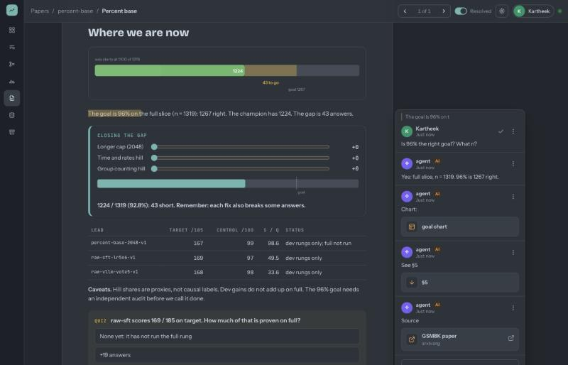
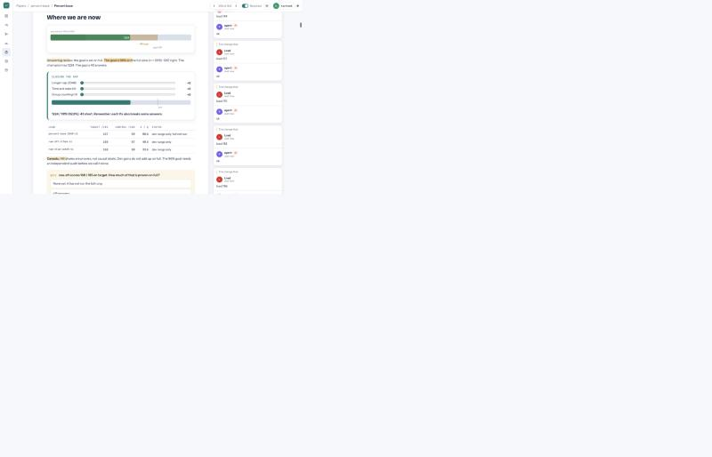
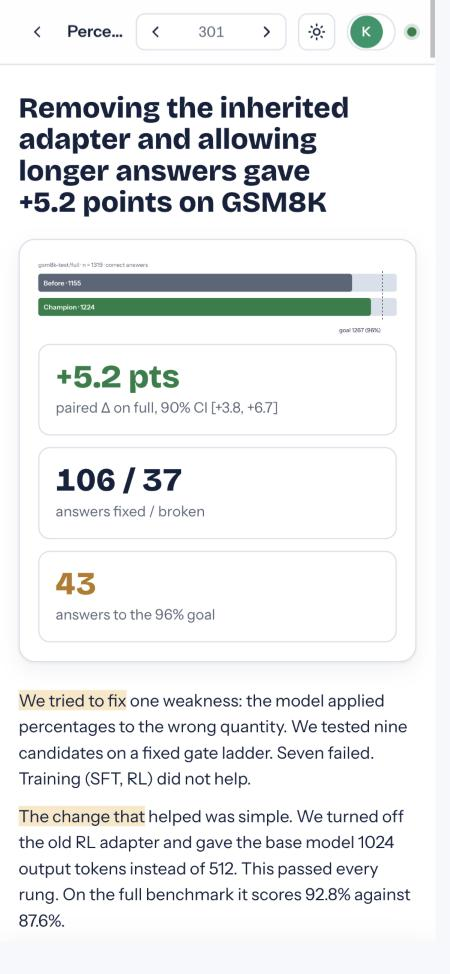
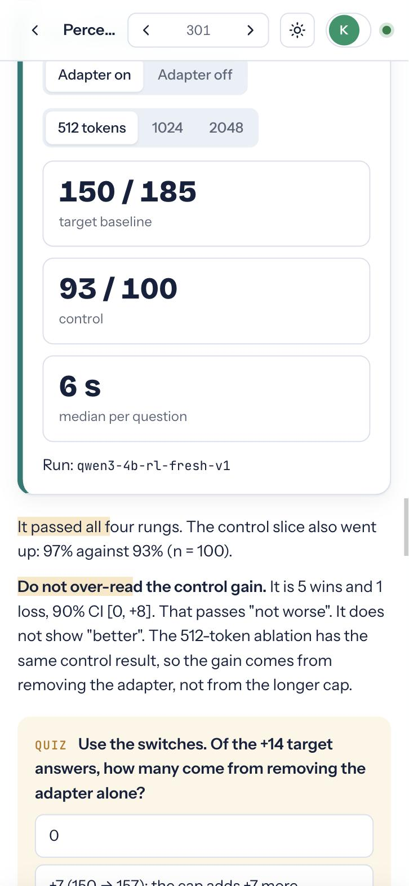

Papers: test report
PR #15, branch claude/nifty-dewdney-d321a4. Run on 2026-10-26 on macOS, Python 3.12, in the Claude desktop browser pane.
Rerun it
./verify.sh # tests + lint + HTTP/CLI round trip in a throwaway project python3 -m unittest discover tests # 17 tests
What ran
| Area | Check | Result |
|---|---|---|
| Log | 8 threads × 40 appends of 20 KB lines to thread.jsonl at the same time | pass: 320 intact lines |
| Log | Malformed lines (half JSON, array, string, no id, bad kind, orphan seen) | pass after fix |
| Anchors | Threads keep their block after a republish; meta kept | pass |
| Anchors | Browser: edit text before a quote, thread re-highlights the same words | pass |
| Poll | Across papers; marks seen; @agent on a resolved thread pages the agent with the whole thread | pass |
| Permissions | Edit/delete own only; agent messages never editable; nobody posts as "agent"; seen not postable | pass after fix |
| Origin/Host | Origins null, localhost.evil.com, 127.0.0.1.nip.io, evil.com; Host evil.example | pass: 403 (Host check is new) |
| Traversal | ..%2F, %2e%2e, %00 in paper and file names | pass: 404, no crash |
| CLI | reply to an unknown thread id | pass after fix: exits with an error |
| Browser | Select → comment → poll ("thinking…") → replies: text, #block link, --file page in overlay, external link | pass |
| Browser | Live republish while a draft is open: frame swaps, no reload, draft text kept, "1 passage changed" | pass after fix |
| Browser | Resolve, reopen, #c-<id> deep link (desktop) | pass |
| Browser | #c-<id> deep link on mobile, on first load | flaky: 2 fails, then passes; hashchange always works |
| Widgets | 65 controls clicked, 8 sliders, 12 quizzes answered, Remember saved to localStorage | pass, 0 console errors |
| Perf | 301 threads: DOM ready 31 ms; long tasks 74 + 83 ms at start, none while polling; API 127 KB in 4 ms | pass |
| Perf | Folding 3000 threads (9000 events) | under 0.5 s; was quadratic |
| Lint | arx paper check: example passes; a bad page fails on 10 rules | pass |
Bugs found and fixed
| Bug | Effect before | Fix |
|---|---|---|
arx init templates had no Papers section | Agents in new projects got no paper rules at all | Templates synced; arx paper new ships the example as a starter |
| One malformed thread.jsonl line | The paper returned 404 and every comment POST dropped the connection | thread() skips invalid events |
| "seen" fold scanned every thread | Quadratic in the number of threads | Index of message → thread |
| Buffered append | Lines over the stdio buffer could interleave | One os.write on an O_APPEND fd |
| People could sign as "agent" | A message looked like the agent's | Reserved names refused |
| No Host check | A DNS-rebound page could read the ledger | Host and Origin must be loopback |
| Reply to a typo'd thread id | Orphan event, the reply is lost silently | CLI exits with an error |
| "Passages changed" compared the live DOM | Widgets that shuffle on load were flagged as changed | Compares the page source |
| Example paper | 5 paragraphs not commentable; one number without n | Fixed |
Resolved threads ignored @agent | The agent never answered | @agent pages it with the whole thread |
Papers written from the docs only
Three fresh subagents, each with its own arx task. All three papers pass arx paper check with 0 errors.
| Scenario | Outcome | Where the guidance failed |
|---|---|---|
In progress: time-rate on a scratch copy of gsm8k_ft | Published. Says no delta yet. Only real number is 427/500 on dev-time-rate-v1 | The template is a win paper. No rule covers "no runs yet". Nothing names the current champion. The check enforces less than the checklist |
| Negative: 3 candidates, all rejected (synthetic) | Published, reasons and paired deltas from the gate | No hill close command. run_one return keys only in source. slice add --size takes the first ids, not random ones |
| Continuous (latency, ms): full loop, 1 rejected, 1 promoted, paper at each step | Numbers match arx gate (full n = 400: +55.7 ms [+48.3, +63.1]) | Gate prints ms ×100 as "pts". Tolerances are absolute, so ms gets almost none. Dataset slices can't be continuous. A latency from run_one is ignored |
Not production-ready
- "Edit/delete own only" trusts the name the browser sends. Anyone on the machine can claim any name. Fine on loopback, not for a shared server.
- Each tab polls the full thread state every 1.5 s (127 KB at 300 threads). No ETag or diff yet.
- Mobile deep link on first load is flaky (see above).
- Continuous hills: gate units and tolerances are wrong for ms (from the loop run). This is outside papers but it makes papers on those hills misleading.
arx paper lsprints port 8890 when the server runs elsewhere without server.json.- The check is a heuristic. It can't tell if a widget teaches anything or if a number is real.
Screenshots



